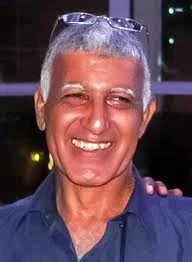

יכיני
חג'בי יזהר ז"ל
איש אדמה, קומביינים ומשפחה
סיפור חיים
יזהר חג׳בי ז״ל, בנם של אילנה ושלמה, נולד בי׳ בשבט תשי״ז, 12 בינואר 1957, בבאר שבע. הוא היה אח לאמנון, סמדר, זהבה, נרקיס, גיורא, אבשלום, ערן, יריב ונילי.
יזהר גדל במושב יכיני שבמועצה האזורית שער הנגב. הוא למד בבית הספר הממלכתי־דתי במושב, ובהמשך בבית הספר הממלכתי האזורי במבועים. בתיכון למד במגמת מכונאות רכב בכפר הנוער על שם בן ציון מוסינזון שבהוד השרון.
בנעוריו אהב לשחק כדורסל ולהאזין למוזיקה מאוסף התקליטים שלו. אחותו נילי סיפרה כי בילדותה היה משמיע לה במשך שעות תקליטים בחדרו, וכי בכל פעם שהיא חושבת עליו מתנגן בראשה השיר Last Train to London.
לאחר שסיים 13 שנות לימוד, כולל לימודי מקצוע, התגייס לצה״ל ושירת כנהג בכלי רכב צבאיים ובטנקים באוגדת עזה, האחראית על אבטחת גבול ישראל עם רצועת עזה.
עם סיום שירותו הצבאי החל לעבוד כנהג בקומביין תבואות. בתוך זמן קצר רכש כמה קומביינים, ובעזרתם קצר חיטה ודגנים נוספים. הוא היה איש אדמה אמיתי, איש עבודה, תלמים, שדות וקציר.
יזהר מעולם לא נישא, ואת רוב זמנו הפנוי הקדיש למשפחתו המורחבת. הוא דאג במיוחד לאחייניו הרבים, פינק אותם, שמח בהם והיה עבורם דמות מרכזית ואהובה. מסירותו האינסופית זיכתה אותו בכינוי ״דוד חובק דורות״.
אחותו נילי סיפרה כי בכל יום הולדת של בן משפחה היה הראשון לברך, בכל דרך אפשרית, ותמיד באותה ברכה שהסתיימה במילים ״אוהב אותך״. היא סיפרה שאין אחיין אחד שלא בילה את שנותיו הראשונות על כתפיו החזקות של דוד יזהר; שהוא היה מקפיץ אותם, קורא ״הופ, הופ, הופ״, מתכופף מתחת למשקופים כדי שלא יקבלו מכה, ומניף אותם גבוה.
כל אחיין קיבל ממנו את הכינוי ״מר בחור״, וכל ילד ידע שאצל דוד יזהר תמיד מחכים ביצת הפתעה, אצבע קינדר, חיבוק גדול וחיוך רחב. בתחילת כל קיץ נהג להעלות את אחייניו הצעירים על הקומביין, והם אהבו לעבוד איתו ולקצור יחד את התבואה.
אחיינו רועי סיפר כי יזהר תמיד דאג לשלום כולם, תמיד המתין מחוץ לבית כשהמשפחה הגיעה לסבא וסבתא, ותמיד שימח את הילדים בחיבוק, אהבה ונשיקה לפני שחזרו הביתה. הוא כתב כי זכו לחיות איתו ובקרבתו, וכי עבורם היה כמו אבא של כולם.
אוהביו סיפרו עליו שהיה איש צנוע וחכם, בעל ידי זהב, שידע לתקן כל דבר ולתת עצות טובות. הוא אהב להאזין למוזיקה תימנית ולשירים משנות השישים עד שנות השמונים, הקפיד לשמור על בריאותו ולאכול אוכל בריא, ותמיד דאג לאחרים לפני שדאג לעצמו.
יזהר היה עמוד תווך משפחתי - דמות מרגיעה ומאחדת, נשמה טובה, איש של בית, עבודה, מוזיקה, קומביינים, שדות ואהבה גדולה למשפחה.
שבעה באוקטובר והימים שאחריו בבוקר שבת, שמחת תורה תשפ״ד, 7 באוקטובר 2023, חדרו מחבלים למושב יכיני במסגרת מתקפת הטרור הרצחנית על יישובי עוטף עזה.
כאשר החל ירי הטילים שהה יזהר בביתו. קרוביו התקשרו לשאול לשלומו, והוא, כהרגלו, ענה שהכול בסדר. זמן קצר לאחר מכן שלח הודעה בקבוצת הוואטסאפ של יכיני ודיווח שנשמעות יריות בשער המושב.
לאחר מכן נותק עימו הקשר.
יזהר חג׳בי נרצח בביתו במושב יכיני בכ״ב בתשרי תשפ״ד, 7 באוקטובר 2023. בן 66 היה במותו.
הוא הובא למנוחת עולמים בבית העלמין המקומי במושב יכיני.
זיכרון ומילים מהלב על מצבתו נכתב באקרוסטיכון על פי אותיות שמו: ״יהיו פניך אורנו לדורי דורות, זוהרך ינחנו בתלמים אשר חרשת, הקוצר ברינה את השיבולת הכורעה, ראה אהובנו, שלפי הקציר מחכים לשובך.״
עוד כתבו אוהביו מתוך השיר ״שיבולת בשדה״ של מתתיהו שלם: ״שיבולת בשדה כורעה ברוח מעומס גרעינים כי רב... קיצרו, שילחו מגל, עת ראשית הקציר.״
אחותו זהבה ספדה לו: ״יזהר אחי הבכור, האיש היפה עם מאור הפנים, החיוך המעט מבויש, איש האדמה והעבודה בעל הלב הרחב שנרתם לסייע לכל מי שביקש עזרה.״ היא כתבה שהדממה שהשאיר אחריו זועקת, שכבר לא שומעים אותו שר או שורק בסככה, מכה בפטיש ומרעיש עם הכלים והקומביינים.
אפיק, אחיינו הבכור, ספד לו כמי שהיה תמיד שם - לתת עצה טובה, לשאול לשלום כולם, לקנות לילדים סביבונים וסופגניות בחנוכה, לדאוג למשהו מתוק במקרר, ולנהל את משק הבית של סבא וסבתא. הוא כינה אותו סמל לבית משפחת חג׳בי, איש צנוע וחכם, שזוהר יישאר לנצח בקרבם.
אחיינו רועי ספד לו וכתב כי את יזהר לקח הרוע, מבלי שהבחין שהוא יורה בלב הכי אוהב שהמשפחה ידעה.
בת שבע, גיסתו, כתבה שהיה בן, אח, גיס ודוד משמעותי בחיי המשפחה כולה, ושחסרונו ישאיר כאב גדול בלב כולם.
אחייניתו בר כתבה כי הסככה והקומביינים נותרו יתומים, וכך גם הם. היא תיארה אותו כאבא של כולם, עמוד התווך של המשפחה, הדמות המרגיעה והמאחדת, הנשמה הטובה שתמיד מחייכת ומחבקת.
משפחתו יזמה כתיבת ספר תורה לעילוי נשמתו, שיוכנס לבית הכנסת במושב יכיני.
יזהר נזכר כאיש אדמה, איש עבודה ואיש משפחה. דוד אהוב, אח מסור, אדם צנוע, חכם, טוב לב ובעל ידיים טובות. אדם שהרעיף אהבה לכל עבר, נשא ילדים על כתפיו, חרש תלמים, קצר שיבולים, ותמיד ידע לומר ״כפרה״, ״עיוני״ ו״הנשמה שלי״.